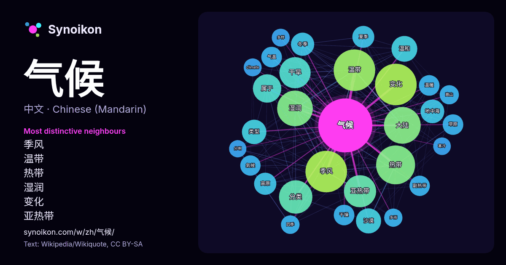

中文 · 热门词
气候
“climate” · 来自维基百科, Wikiquote 1309 次出现中其周围的词。

最具特色的邻近词
- 季风 128×
- 温带 124×
- 热带 95×
- 湿润 94×
- 变化 89×
- 亚热带 77×
- 干旱 76×
- 大陆 71×
- 分类 71×
- 温和 52×
- 沙漠 47×
- 属于 43×
- 地中海 43×
- 高原 38×
- 冬季 37×
- 副热带 36×
- 类型 35×
- 温暖 35×
- 干燥 34×
- 气温 33×
× = 比维基百科普通文本中多出的倍数。
最常见的邻近词
- 变化 150
- 季风 150
- 温带 150
- 热带 132
- 大陆 118
- 湿润 111
- 分类 97
- 亚热带 90
- 干旱 85
- 地区 76
- 属于 70
- 温和 58
- 影响 55
- 沙漠 55
- 类型 52
- 地中海 49
- 冬季 47
- 高原 43
- 夏季 42
- 南部 37
上下文
- 气候状况。 古气候学是对古代气候的研究和描述。由于19世纪前气候无法通过直接观察获得，因而古气候是通过代用指标推断得到的，这些代理变量包括非生物迹象如在湖床和冰核中发现的沉积物，以及生物迹象如树木年轮和珊瑚生物。气候模型是指包括古代，现代和未来的气候的数学模型。季節分配比較均勻。 气候 Wikipedia snippets · 氣候
- 气候变化”。报告中的气候模型预测总结指出在21世纪，根据温室气体的排放量，全球表面温度有可能进一步上升0.3-1.7°C至2.6-4.8°C。这些发现已被主要发达国家的科学院所认可，并且没有任何一个国家级或有着国际地位的科学机构对此提出异议。 未来的气候 Wikipedia snippets · 全球变暖
- 當今氣候變化包括全球变暖（全球均溫（英语：Global surface temperature）持续上升）與其对地球气候系统進一步的影响。气候变化广义上包括以往地球氣候的长期演变，而当前全球升温主要來自人类活动，尤其工业革命以降使用的化石燃料。燃燒化石燃料、森林砍伐以及部分农、工業活动排放的温室气体 Wikipedia snippets · 氣候變化
- 高原山地气候（英語：Highland climate）又称高地气候或高山气候（英語：Mountain climate），是粗糙的地理学术语，用来指称在高山的气候，或是更广泛地说，指高原地区的气候。它通常拿来与低地气候作对比，后者指称的是在围绕或邻近高山的低地的气候。高原山地气候 Wikipedia snippets · 高原山地气候
- 热带雨林气候，又称热带型雨林气候，是一种大部分分布在赤道两侧10~15度内、每月降水量至少达60毫米的热带气候，全年高温、多雨、潮湿，在柯本氣候分類法中代號為「Af」。热带雨林气候可分为两种子类型：常年受赤道低压带控制的赤道多雨气候和常年受潮湿信风控制的热带海洋性气候。热带雨林气候 Wikipedia snippets · 熱帶雨林氣候
- 熱帶莽原氣候（又稱熱帶乾濕草原季氣候、萨瓦纳气候、热带疏林草原气候）的地區位于赤道多雨气候的高纬两侧，具体位于非洲撒哈拉以南高原、马达加斯加岛西部、西印度群岛部分、墨西哥高原、中美洲西岸、南美洲的巴西高原等地。植被为热带稀树草原，草地上会长有纺锤树、猴面包树和金合欢树等。 纬度较低，太阳高度大，终年高温 Wikipedia snippets · 熱帶乾濕季氣候
- 是中华人民共和国西南边疆地区的省份。云南地形复杂多变，以高原与山地为主，海拔落差大，呈“西北高、东南低”地势格局。气候类型多样，从高原气候到热带、亚热带气候均有分布，具有显著的垂直气候带特征。全省物种资源极为丰富，动植物种类数位居全国前列，素有“动植物王国”之称。 Wikipedia snippets · 云南省
- 杭州市属亚热带季风气候，由热带海洋气团与极地大陆气团交替控制，夏季高温多雨，冬季温和少雨，形成亚热带常绿阔叶林。 杭州四季分明，春秋较短，冬夏较长，其中夏季最长，是最短的秋季时长的两倍以上。春季回暖始于惊蛰前后，且仍多冷空气，冷暖转换迅速；夏初有闷热高湿的梅雨，梅雨时长和梅雨量年际差异较大，平均始于 Wikipedia snippets · 杭州气候
更多词
于 2026-10-09 以默认设置预先计算（±5 个词，中等语料）。交互式图可用实时数据刷新。
界面为机器翻译，欢迎指正。